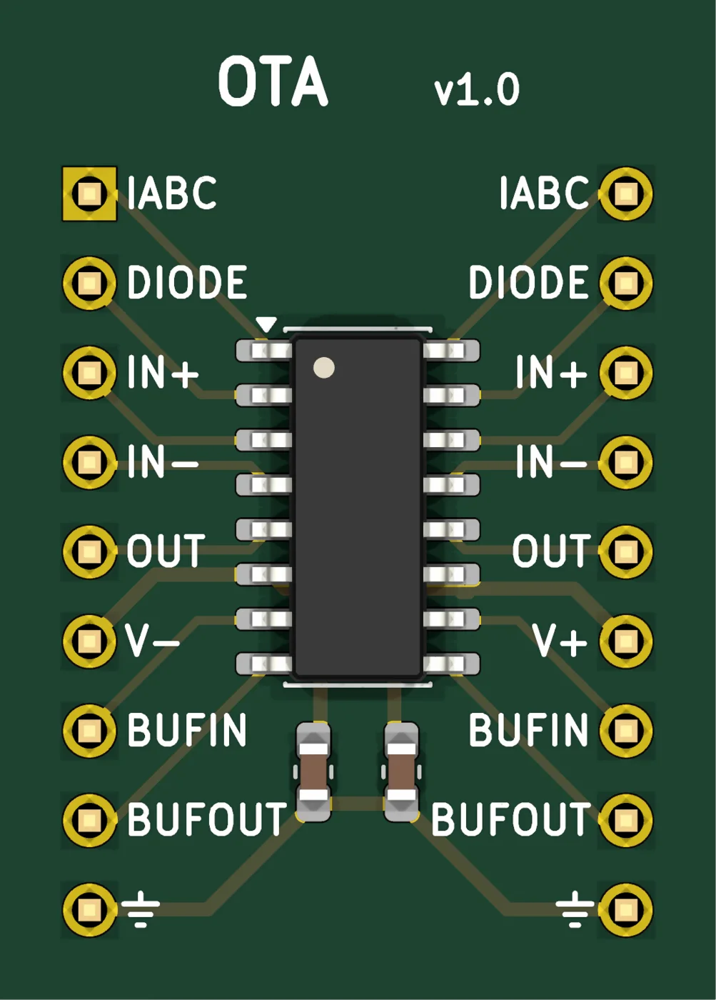
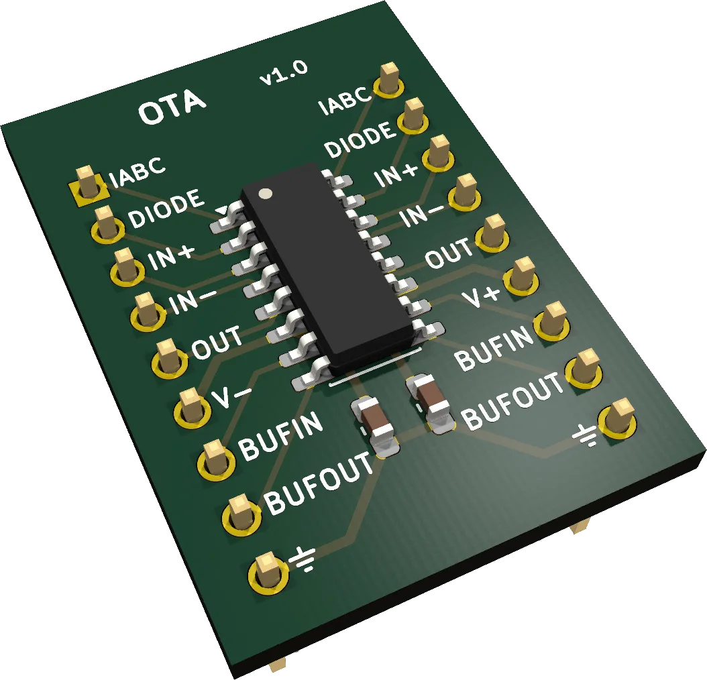
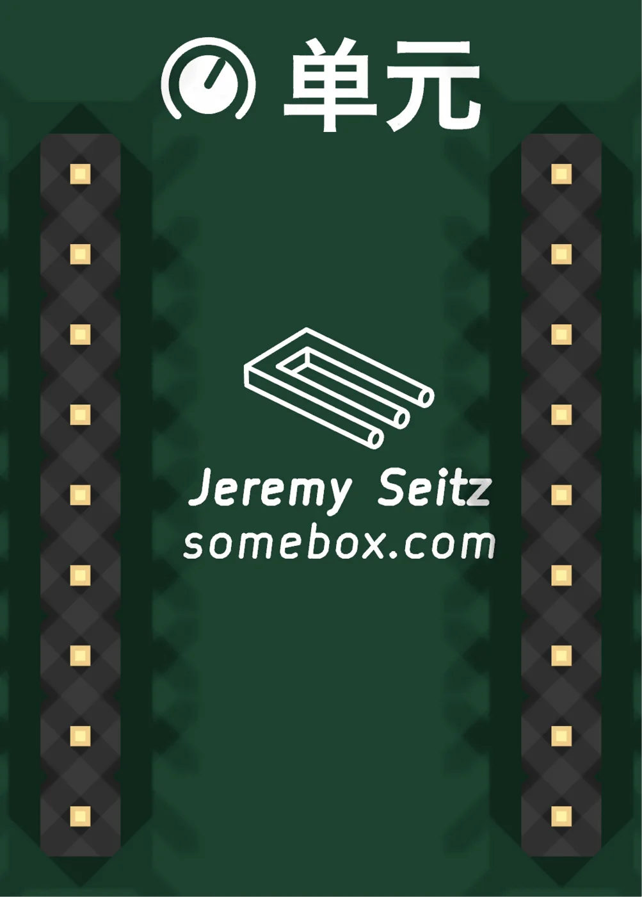
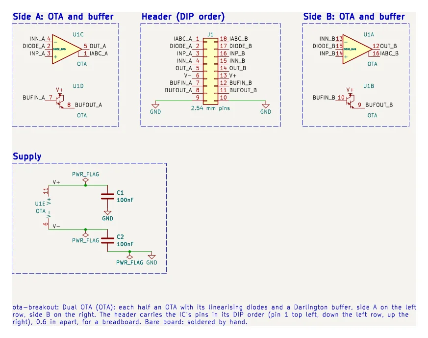

OTA breakout: a dual OTA for the breadboard
A dual OTA on a 0.6 in wide header in its own pin order, to try OTA circuits on a breadboard.
A small breakout for a dual operational transconductance amplifier, the chip in my VCA and VCF. Each half is an OTA with its linearising diodes and a Darlington buffer; side A is on the left row of pins, side B on the right.
The chip and its decoupling sit on a board 0.8 in wide. Its pins come out on two rows of 2.54 mm header 0.6 in apart, in the order a DIP package would have them, so the board straddles a breadboard's middle and the datasheet's pinout still holds. The chip has no ground pin, so each row ends in a GND pin for the decoupling capacitors' return. Every pin is named beside its pad.
I'd rather have the interesting chips from my boards on breakouts I can reuse than as loose spares. These come bare: I solder the chip and two capacitors by hand. Not built yet.
- Status
- In the first test order, being placed
- Version
- v1.0 (2026-10-26)
- First order
- 5 on a snap-apart panel with the other IC breakouts, bare



What it does
- One dual OTA, each half with linearising diodes and a Darlington output buffer.
- 2 × 9 pins on a 2.54 mm pitch, rows 15.24 mm (0.6 in) apart: the chip's 16 pins in DIP order, and a GND pin at the foot of each row.
- Supply: ±12 V on V+ and V−, 36 V across them at most.
- 100 nF on each supply pin, beside the chip.
- IABC takes the amplifier's bias current, 2 mA at most.
- 20.32 × 28.36 mm, 0.8 in wide.
Pins
| IABC | IABC |
| DIODE | DIODE |
| IN+ | IN+ |
| IN- | IN- |
| OUT | OUT |
| V- | V+ |
| BUFIN | BUFIN |
| BUFOUT | BUFOUT |
| GND | GND |
Wiring and setup
- The header goes underneath, long pins down, soldered from the front.
- Connect both GND pins to ground: they carry the decoupling capacitors' return.
- Feed IABC through a resistor from a control voltage, or from a current source.
- DIODE biases the linearising diodes; leave it open when they aren't used.
- The buffer has no load of its own: give BUFOUT a resistor to V− (10k to 47k), or leave the buffer unused with BUFIN tied to V−.
Limits and open questions
- Not built yet.
- A surface-mount chip on a bare board: soldered by hand, with hot air or an iron on the hand-solder pads.
Development notes
- It comes on the snap-apart panel with the other chip breakouts. The chips and capacitors are bought alongside and fitted by hand.
Schematic
The schematic as drawn, with each chip named by its function rather than its part number. The design isn't open source yet, so there are no files to download.


Would you use a OTA? A thumbs-up on its tracking issue is how I count interest, and you can subscribe there to follow its bring-up. Questions and ideas go to the discussions.